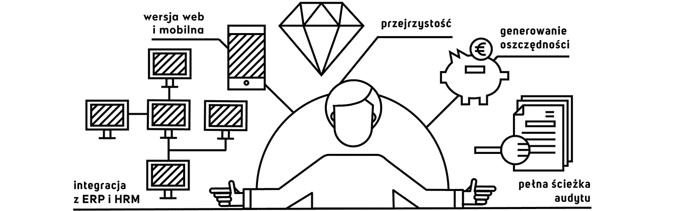

Teraz możesz zastąpić Excela stabilnym, zautomatyzowanym narzędziem zintegrowanym z ERP w Twojej firmie. Dzięki temu proces ręczny zostaje zautomatyzowany, a w sytuacjach wyjątkowych możesz reagować nim będzie za późno. Dostarczamy Ci kompletne rozwiązanie do obsługi pełnego procesu podróży służbowych i wydatków. Korzystają na tym wszyscy: kadra zarządzająca, księgowi i podróżujący.
Koszty podróży i pozostałe wydatki to zazwyczaj trzecie co do wielkości koszty po kosztach bezpośrednich i kosztach personelu. Zdając sobie z tego sprawę, tak stworzyliśmy nasz system by charakteryzowały go:
